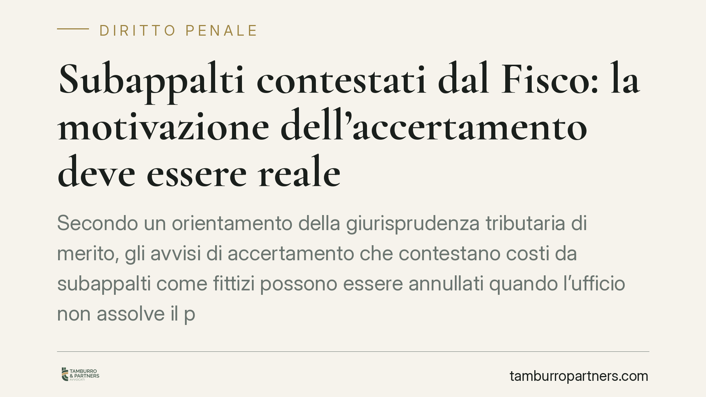

Subappalti contestati dal Fisco: la motivazione dell'accertamento deve essere reale
Secondo un orientamento della giurisprudenza tributaria di merito, gli avvisi di accertamento che contestano costi da subappalti come fittizi possono essere annullati quando l'ufficio non assolve il proprio onere probatorio e non motiva davvero l'atto. Il tema tocca due piani distinti: il contenzioso tributario e il rischio penale per operazioni inesistenti. Vediamo cosa cambia per l'impresa edile e come organizzare la difesa documentale.

Il fatto
La contestazione di costi derivanti da contratti di subappalto ritenuti fittizi è uno scenario ricorrente negli accertamenti a carico delle imprese edili. Recenti pronunce della giurisdizione tributaria di merito lombarda hanno annullato avvisi di accertamento fondati sulla presunta inesistenza delle prestazioni, valorizzando due elementi: il mancato assolvimento dell'onere probatorio da parte dell'ufficio e il difetto di motivazione reale dell'atto.
Una nota di metodo è doverosa: gli estremi delle singole sentenze vanno sempre verificati e letti nel testo integrale prima di qualsiasi uso processuale. Un massimario o una sintesi non sostituiscono la lettura della motivazione, che spesso è calibrata sulle specificità del caso.
Inquadramento normativo
Due sono i pilastri.
Il primo è l'art. 7 della L. 212/2000 (Statuto del contribuente), che impone all'amministrazione di motivare gli atti indicando presupposti di fatto e ragioni giuridiche della pretesa. La giurisprudenza distingue da tempo tra motivazione *reale* — che consente al contribuente di comprendere e contestare l'iter logico dell'ufficio — e motivazione *apparente*, che si limita a formule di stile o richiami generici. Quest'ultima rende l'atto illegittimo.
Il secondo è l'art. 7, comma 5-bis, del D.Lgs. 546/1992, introdotto dalla L. 130/2022. La norma è centrale e non va trascurata: pone espressamente sull'ente impositore l'onere di provare in giudizio le violazioni contestate. Il giudice annulla l'atto se la prova della pretesa manca, è contraddittoria o insufficiente. In materia di costi da subappalto ritenuti inesistenti, ciò significa che non basta un sospetto o un'anomalia contabile: serve un quadro probatorio coerente.
Il risvolto penale: attenzione a non confondere le fattispecie
La contestazione di operazioni inesistenti può generare un procedimento penale parallelo. La fattispecie corretta, quando la contestazione riguarda l'utilizzo di fatture per operazioni inesistenti, è l'art. 2 del D.Lgs. 74/2000 (dichiarazione fraudolenta mediante uso di fatture o altri documenti per operazioni inesistenti). Va tenuto distinto dall'art. 3 dello stesso decreto, che punisce la dichiarazione fraudolenta mediante *altri* artifici e opera in via residuale, proprio quando non si utilizzano fatture false. Confondere le due ipotesi è un errore ricorrente: se il nucleo della contestazione sono le fatture da subappalto, il perimetro è quello dell'art. 2.
Un punto tecnico rilevante: l'art. 2 non prevede soglie di punibilità. A differenza degli artt. 4 (dichiarazione infedele) e 5 (omessa dichiarazione), dove scattano solo oltre determinate imposte evase, l'uso di fatture per operazioni inesistenti è penalmente rilevante a prescindere dall'importo. Questo cambia radicalmente la valutazione del rischio.
Doppio binario e utilizzabilità della prova
Procedimento tributario e penale sono autonomi. Gli artt. 20 e 21 del D.Lgs. 74/2000 sanciscono che l'accertamento tributario e il processo penale procedono separatamente e che il primo non è sospeso in attesa del secondo. Da qui alcune conseguenze pratiche.
L'esito favorevole in sede tributaria non vincola automaticamente il giudice penale, che valuta gli elementi con i propri criteri probatori. È vero il contrario: gli elementi raccolti in un procedimento possono transitare nell'altro, con i limiti di utilizzabilità propri di ciascuna sede. Resta poi aperto, sul piano dei principi, il tema del ne bis in idem tra sanzione tributaria e sanzione penale, oggetto di una nota evoluzione della giurisprudenza CEDU e della Corte costituzionale, incentrata sul criterio della connessione sostanziale e temporale tra i due procedimenti.
Implicazioni pratiche per l'impresa
Per chi opera nell'edilizia e ricorre stabilmente al subappalto, il messaggio operativo è duplice. Da un lato, la difesa tributaria può far leva sul difetto di motivazione e sul mancato assolvimento dell'onere probatorio dell'ufficio. Dall'altro, la solidità documentale è la miglior tutela preventiva, anche in ottica penale.
Cosa fare in concreto
- Conservate i contratti di subappalto con date certe, oggetto dettagliato e corrispettivi, evitando clausole generiche.
- Archiviate i SAL (stati di avanzamento lavori) e ogni documentazione tecnica che attesti l'effettiva esecuzione delle prestazioni.
- Verificate DURC e requisiti dei subappaltatori all'atto dell'affidamento e periodicamente.
- Tracciate tutti i pagamenti con strumenti bancari, conservando la corrispondenza tra fattura, contratto e flusso finanziario.
- Contestate subito la motivazione apparente: se l'avviso non spiega presupposti e ragioni, eccepite la violazione dell'art. 7 L. 212/2000 e l'art. 7, comma 5-bis, D.Lgs. 546/1992.
Consigliamo di far esaminare l'atto da un professionista nei termini di impugnazione, valutando fin da subito l'eventuale esposizione penale.
---
Contributo informativo a cura di Tamburro & Partners - Avv. Giuseppe Tamburro. Non costituisce parere legale.
Ogni condominio ha una storia a sé.
Se gestisci un'amministrazione e vuoi un confronto su una specifica questione condominiale, scrivi allo studio. Ti rispondiamo entro un giorno lavorativo.